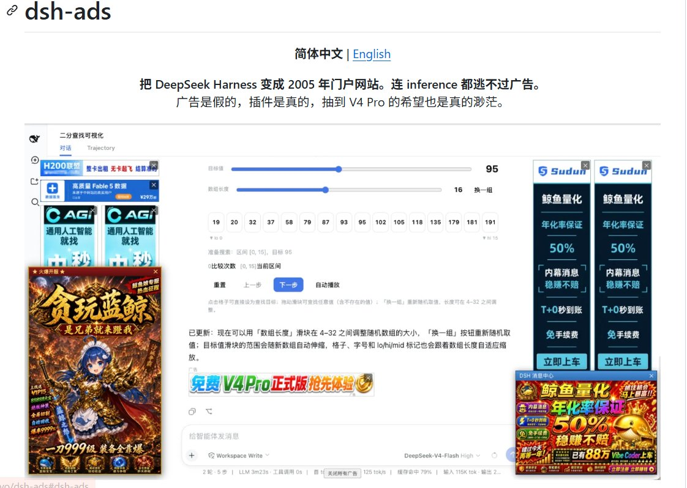

洛铃🦊Magic Caster
@LolingVerse
https://t.co/LSOJtsSsp2

Jesse Zhang
@Nag1ovo
很荣幸入选参与了 Deepseek Harness 的内测！
关于 DSH 相关技术本身，我没有什么太多想讲的，想必各大 AI 自媒体都会第一时间做出技术解析的流水线文章。我只是想聊聊这个温馨的技术群。
我很自豪自己在内测期间不曾对外部暗示或者泄露任何内测信息，并站好了内测的最后一班岗。 https://t.co/2rbdA9suzX https://t.co/CZ6akJpF67